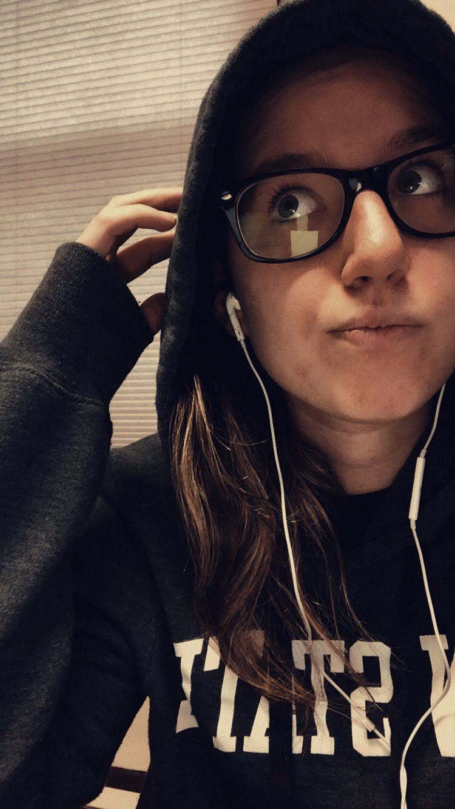

<section id="about"> 
   <div class="me">
        <h2>Janet Pituch</h2>
        <figure>
            <div ></div>
        </figure>
    <p>Hi! This is me Janet Pituch I am a Digit major with two minors in data visualization and communication of multimedia. This site is to show what I can do and how well I understand my major and minors. I hope you all enjoy this webiste as much as i enjoy making this site.</p>
    <p>I would like to take this time to let you understand why I choose Penn State Behrend. I choose Behrend for the distance. I live in a little town near hear called Union City which gives me the oppertunity to drive home and work at Parker Haniffin. Right now I work in the HR office as an HR intern due to my school schedule and assembly not mixing well. Working at Parker in assembly and HR taught me many things. In assembly it has taught me to work as a team and listent to everyone even if they are not as experienced. Everyone around you is trying to help you and encourage you to do your best. The person who trained my in Assembly told me his boss once said to him <i>"If you do not know something take advantage and learn it. strive to the challenge in learning it to move up in this world."</i> I think about this when struggling now because the more I learn and take in from a job or class I will be able to use later on in some way shape or form.</p>
    </div>
</section>